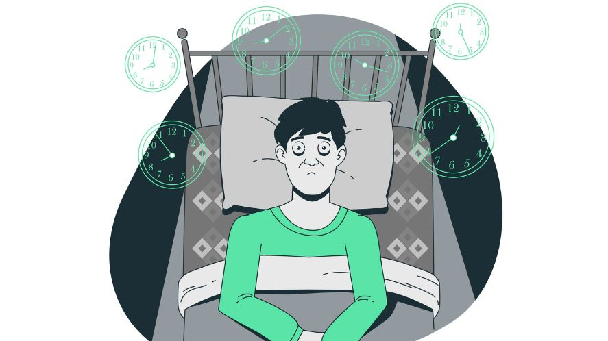
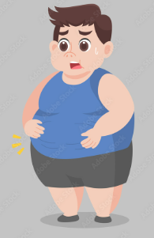
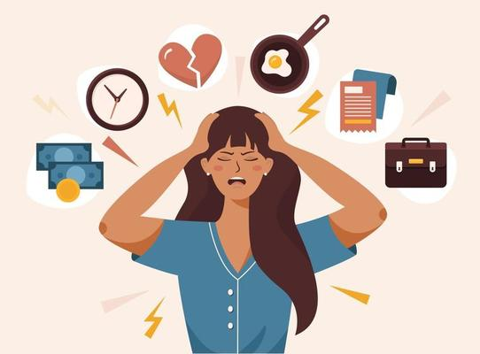
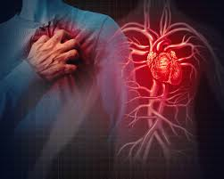

If you were to neglect your health, it can lead to a very wide list of negative consequences.
For physical health impacts, this includes:
• Weakened immune system
• chronic diseases
• digestive problems and nutrient absorption issues
For mental health impacts, this includes:
• Depression and anxiety
• Cognitive decline (quick to forget stuff, lack of focus etc.)
• Difficulty in controlling emotions
1. Why should we take care of our own health?
Your health is incredibly important to you! Why you should take care of your health is simple, it is so that you can have the energy everyday to continue performing your daily life, to keep your body’s immune system strong so you do not fall ill easily, and studies also show that being physically healthy links to being mentally healthier as well!
2. What makes an unhealthy lifestyle?
Some people may be living a unhealthy lifestyle without realizing it. The potential consequences have already
been discussed, but what exactly are the actions a person does that classifies their life as an unhealthy one?
Here are some summarized points that makes an unhealthy lifestyle:
• Poor diet
A poor diet means that a person consumes either too much processed foods, sugar, unhealthy fats, and sodium, or
too little essential nutrients like fruits and vegetables, or a mix of both. This results in the body not getting
enough nutrients or too much carbohydrates, which eventually changes into fats.
 • Inadequate sleep
• Inadequate sleep
Insufficient sleep, poor sleep quality or irregular sleep patterns can negatively impact mood (making you more emotionally unstable),
cognotive function (easily forgets stuff, lack of focus, etc.),
and physical health (easily fall sick, as previously mentioned).

• Lack of physical activities
Insufficient or no exercise is bad for the body. As the body is not getting the exercise it needs to burn off the excess
fats, it causes the fats to build up in the body, eventually leading to obesity. This will increase the risk
of you getting various diseases as well.

3. What are the impacts of stress on our health?

Stress can act as a motivator for some people to push forward, but it is unhealthy for the body especially if there is
too much stress on one person. Here are some examples:
• Anxiety
Stress can cause you to feel anxious regularly, affecting your everyday life. Anxiety can make it much harder
to concentrate on school tasks and other responsibilities. Anxiety can also appear in your body as an upset stomach,
skin problems, or other physical symptoms.
• Headaches
When you experience stress, your body releases hormones that affect your blood vessels. These changes can increase
your risk of migraines, tension headaches, or other headaches. Frequent headaches or migraines can interfere with your
ability to focus on school and other areas of your life. You might also have a harder time than usual dealing with
headaches when you are stressed.
• Insomnia
Chronic stress can lead to insomnia. . You might feel more irritable and sluggish during the day.
You might also have trouble making decisions and remembering things.
• Skin problems
Stress can trigger or worsen skin problems, like rashes, eczema, or acne. Chronic stress can lead to more
sensitive skin that breaks out in rashes, hives, or other symptoms more easily, resulting in discomfort or embarrassment.
• Cardiovascular problems
Chronic stress can lead to problems with your cardiovascular system, such as heart disease or high blood pressure. When you’re regularly stressed out,
you increase your risk of having severe cardiovascular problems like stroke or heart attacks. Your risk of developing blood clots can also be higher.

IMPORTANT!
Please remember that dealing with stress by smoking, eating unhealthy foods, sitting around too much, or drinking, can also be very unhealthy in the long term.
Food clicker
Click healthy food increase score, click junk food and score decreases